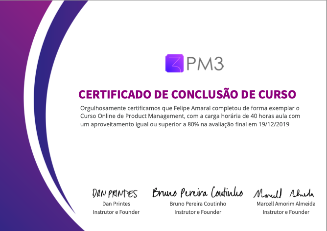
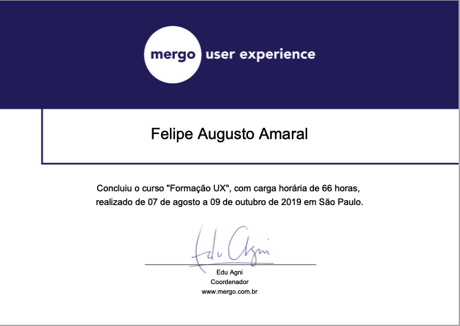

meus
Projetos
Aqui você poderá encontrar um pouco mais sobre alguns projetos pessoais e trabalhos anteriores
Portfolio
Porfolio pessoal, para divulgar meus trabalhos e apresentar minha experiência profissional.
Este projeto foi desenvolvido usando apensar HTML, CSS e Javascript.
Splitz
Aplicativo para controle de gastos pessoais e de gastos compartilhados em casa ou viagens.
O projeto foi desenvolvido usando React Native e Node.
Experiência
Profissional
Atualmente sou Product Manager na PontoTel, uma empresa voltada para o setor de RH e com a missão de melhorar a experiência no controle de ponto e na gestão de pessoas. Tenho mais de 4 anos de experiência em desenvolvimento de produtos digitais, participando do processo desde a concepção e planejamento até a entrega do produto.
Formação Academica
Bacharelado em ciências da computação
Universidade de São Paulo (USP)
2010-2015
Bs in Computer Sciente - Graduação sanduiche
Queen Mary, University of London
2013-2014
Experiência profissional
PontoTel
07/2015 - atual
Comecei na PontoTel como estágiario, depois me tornei desenvolvedor, liderando projetos tanto para entrega de novos produtos/funcionalidade quanto para integração entre sistemas.
Hoje atuo como Product Manager, ajudando na definição de roadmap e participando de todo o processo de vida do produto - entendimento do problema e conversa com usuário, ideação, definição, entrega e melhorias continuas.
Opus Software
01/2015 - 07/2015
Estagiário em desenvolvimento de sistemas
Certificados
Product Manager
PM3 - 2019
UX Design
Mergo UX - 2019
um pouco mais
sobre mim
Sou natural de Araraquara (SP) e atualmente moro em São Paulo. Tive a oportunidade de morar em outros lugares como São Carlos (SP) onde cursei ciências da computação no Instituto de Ciências Matematicas e de Computação (ICMC) da USP e também em Londres, onde puder estudar na Queen Mary, University of London pelo programa Ciências sem Fronteiras.
Nos últimos anos tenho trabalhado com desenvolvimento de produtos digitais, principalmente SaaS voltados para o mercado B2B. Tive a oportunidade de passar por todas as etapas do processo de desenvolvimento de software - desde a concepção da ideia até a construção dos software e hoje, atuando como Product Manager, procuro ajudar a equipe de produto a encontrar as melhores oportunidades e a entregar produtos que agreguem valor aos clientes da PontoTel.
Amo viajar e gosto, principalmente, do desafio de viajar sozinho pelo mundo. O Palmeiras é outra paixão que eu tenho nessa vida e sempre que posso vou ao estádio acompanhar - e sofrer - de perto. Além disso, sou "pai" de dois gatinhos - kiki e suri - que adoram ficar grudados e de fazer arte :)
Gostou?
Entre em contato
Você pode entrar em contato comigo diretamente pelo meu email pessoal:
amaral.felipeaugusto@gmail.comTambém poderá me encontrar na seguintes redes sociais.